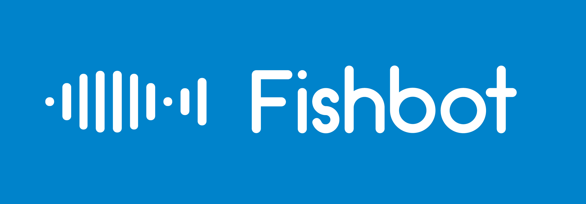
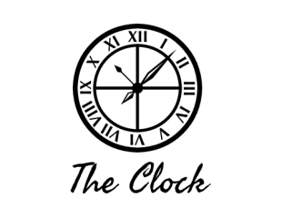
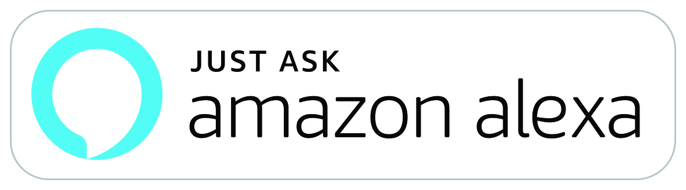

Intro

Hi there, I am Edwin Chan, a Senior currently studying Computer Engineering and Computer Science at University of Southern California.
I enjoy learning different new technologies and making use of them.
Education
- University of Southern California - Computer Engineering and Computer Science (Class of 2020)
GPA:
- 3.82 (Cumulative)
- 3.92 (Spring 2019)
- 4.00 (Fall 2017)
- Member of Golden Key International Honour Society
- Member of Makers at USC, an Electrical Engineering Club
Language
- Fluent in English, Cantonese and Putonghua
- Studied Japanese for two years from S1-S3 (中学校一年から中学校三年まで 日本語を勉強し
ました)
- Member of Japanese Exchange Student Support(JESS) at USC
- A club which helps and hosts Japanese Exchange Students at USC to make them feel like part of the Trojan Family. We answer questions they might have, host cultural exchange events and conversations to help them improve their English skills.
- Can perform daily conversations (日常会話は 大丈夫です)
Work
I am a developer and hackathon enthusiast. I enjoy working with different people, and love to try out different technologies. I have built applications in different languages. For my projects, you can see them on Github, and on DevPost.
Experiences
- Shun Hing Technology Co. Ltd - Software Engineering Intern (Summer 2018)
- Mentor for Front-end development at AthenaHacks 2017
- Digital and Signal Processing Laboratory, Faculty of Electronic Engineering, Chinese University of Hong Kong (Summer, 2014)
- Single-handedly wrote code and designed graphic user-interface of a voice-recognition deviceintended for the deaf and mute (Written in Python and ran the program on a Raspberry Pi)
Conferences
- Group Leader, International Student Science Conference, The Hutchins School, Hobart, Tasmania, Australia (28 Sept - 5 Oct 2013)
- Group Leader, International Student Science Conference, Hong Kong (2 - 8 July 2012)
- Group Leader , Study Trip to Nansha, China (2012)
- Group Leader, Cultural Trip to Beijing (21 - 25 Nov 2011)
Experience
Programming Languages:
- C
- C++
- Java
- Python
- HTML & CSS
- JavaScript
- MySQL
- Swift
- Node.js
Hardware Skills:
- Verilog
- Embedded Systems on Arduino
- Cadence
Technologies:
- Alexa Skill Kit
- AWS EC2
- AWS Lambda
- AWS API Gateway
- AWS Dynamo DB
- AWS IoT Core
- Azure Emotion API
- React-Native & Expo
- Google-Map & Google Places API
- Firebase
- Google Analytics
- OAuth 2.0
Projects
FishBot

FishBot is an automated fihs-farming platform which uses IoT and Cloud technology to help fish-farmers scale up their productions and reduce the resources required.
We developed FishBot with state-of-the-art technology. With our system providing real-time information, fish-farmers can monitor the water environment in their farms, and the data collected will be used to further refine the system.
Check out our startup on this website!
The Clock

Do you want to know the current time of different places in the world? This extension, The Clock, will exactly present to you what you want to know!
Instead of having to remember the time difference between time zones, within on click onto the extension icon on your upper right hand corner, you can immediately access the time for different time zones!
In this project, I aimed to provide a minimalist approach towards the presentation of clocks - making the UI simple to manage. What you have to do is to type the time zone into the text field and the supported time zones will appear below it. If you want a certain time zone to be included but you can't find it from the current ones provided, feel free to reach out and comment in the comment section of which area zones you want to be added! Also feel free to give improvement suggestions in the comments tabs! I would love to listen to you guys for improvements since it is also my first Google Extension!
This app also facilitates interactions between people in different time zones. For example, if you want to collaborate with other people in other time zones on projects, sometimes it is hard to remember or figure out the time, hence it may cause confusions. With this extension, within a click, you can immediately retrieve the information you need without the need to swipe away from the webpage you are reading from, which make things easier.
Some advantages of using this clock:
- Simple UI which users can add a few clocks that they want into the list.
- Display both Analog and Digital time.
- Users do not need to swipe away from their current webpage to retrieve time.
- Minimalist design which works well with Chrome
- Daylight Saving Time issues are automatically taken care of, and indicated in the extension for the region.
Try it out now Live at Chrome Web Store for Extensions!
P.S. credits to CoolClock for their design of the analog clock
Rides
Rides is an Alexa Skill which simplifies the entire process of fare estimation and time estimation to go from place to place with a single voice command! Just by saying "Alexa, ask Smart Rides, from {a} to {b} Uber or Lyft?", you can get the estimation from both companies, which streamlines the entire approach, without the need to fumble your apps in your phone to get the two individual quotes from respective mobile apps!
At the same time, Rides also offer convenience in knowing about the time estimation from one place to another. By just saying "Alexa, ask Smart Rides, how long does it take to go from {a} to {b}?" , it returns you the estimate of driving time, and also public transport(if it could be routed).
Try it out now Live at Amazon Alexa Skill market!

ViHack

ViHack is a React-native application using machine learning to suggest which insurance plan should consumers buy based on their demographics. We also performed data visualization on the provided data set of 1.428 million users to figure out relationships between different variables. It is built during YHack2017 and won the Best Use of Amazon Web Services award.
More Details can be viewed on DevPost.

Sleeping Mask (Side Project at Makers at USC)

The sleep mask project was built during my freshman year. We built a sleeping mask to enhance sleeping experience by waking users at the optimal time in the sleeping cycle, using Adafruit Flora.